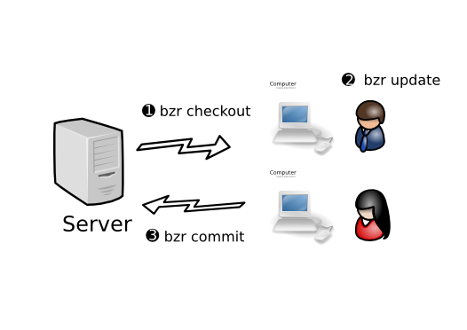

Centralized development¶
Motivation¶
Rather than working in parallel and occasionally merging, it can be useful at times to work in lockstep, i.e. for multiple people to be continuously committing changes to a central location, merging their work with the latest content before every commit.
This workflow is very familiar to users of central VCS tools like Subversion and CVS. It is also applicable to a single developer who works on multiple machines, e.g. someone who normally works on a desktop computer but travels with a laptop, or someone who uses their (Internet connected) home computer to complete office work out of hours.
If centralized development works well for your team already, that’s great. Many teams begin using Breezy this way and experiment with alternative workflows later.
Centralized workflow¶
The diagram below provides an overview of the centralized workflow.
Even if your team is planning to use a more distributed workflow, many of the tasks covered in this chapter may be useful to you, particularly how to publish branches.